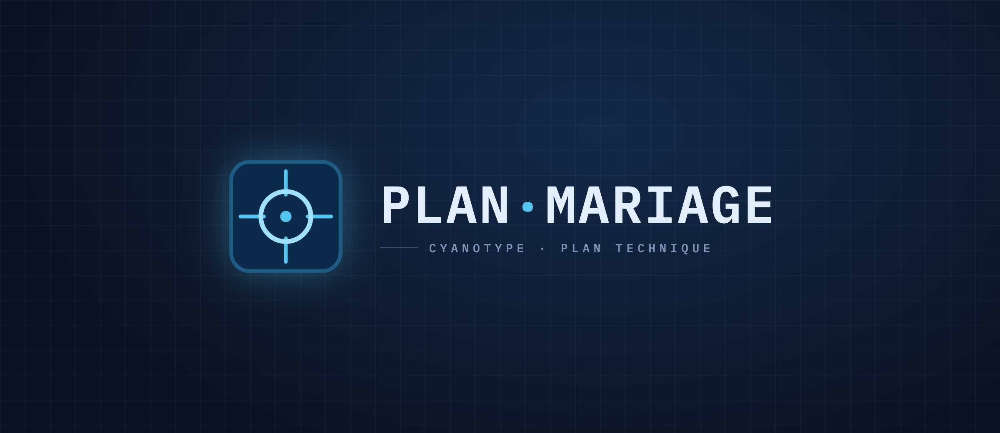
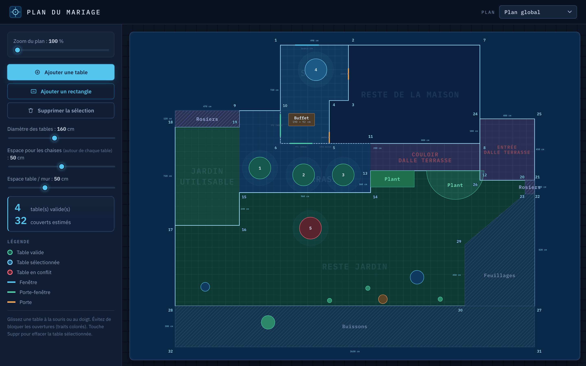
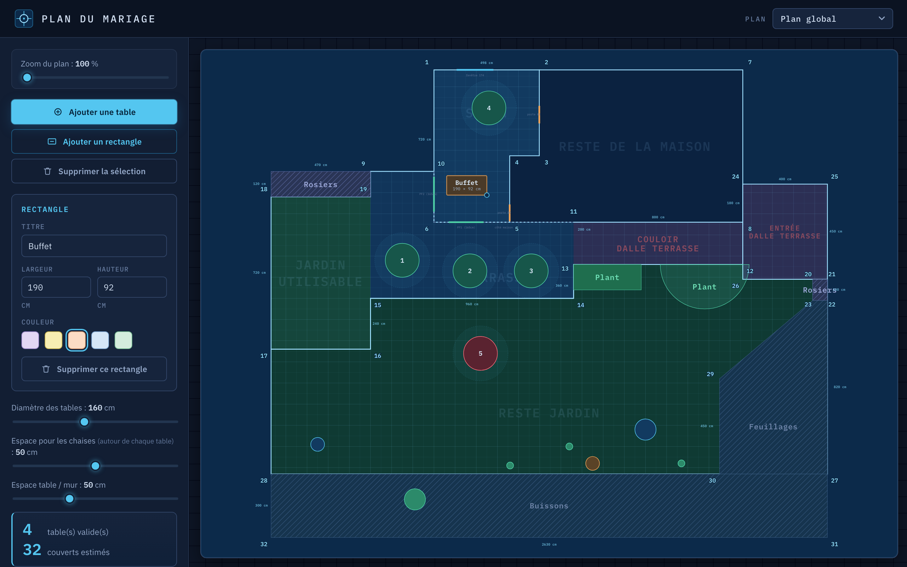
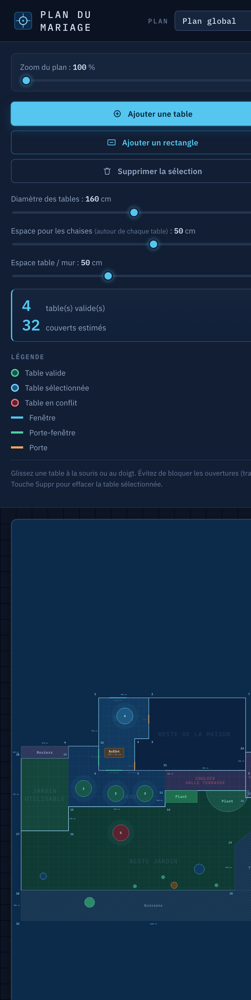

Logo

Aperçu — Plan global (desktop)



Palette
Cyan#54C6F0
Teal (valide)#4FD0A6
Rouge (conflit)#FF6B7A
Plan (Prusse)#0C2A4A
Fond#0E1626
Murs#9FE0FF
Choix principaux
- Interface sombre type logiciel de CAO, reposante.
- Plan = cyanotype : murs cyan lumineux sur bleu de Prusse.
- Mesures en monospace (IBM Plex Mono) : cotes, coins, dimensions alignés.
- Conflit rouge néon ultra-lisible sur fond sombre.
- Coins numérotés cyan, intégrés au linework.
- Lueurs plutôt qu'ombres ; fond de scène millimétré.
- Icônes SVG linéaires, zéro emoji.
- Logo réticule de visée — « centrer au cm près ».